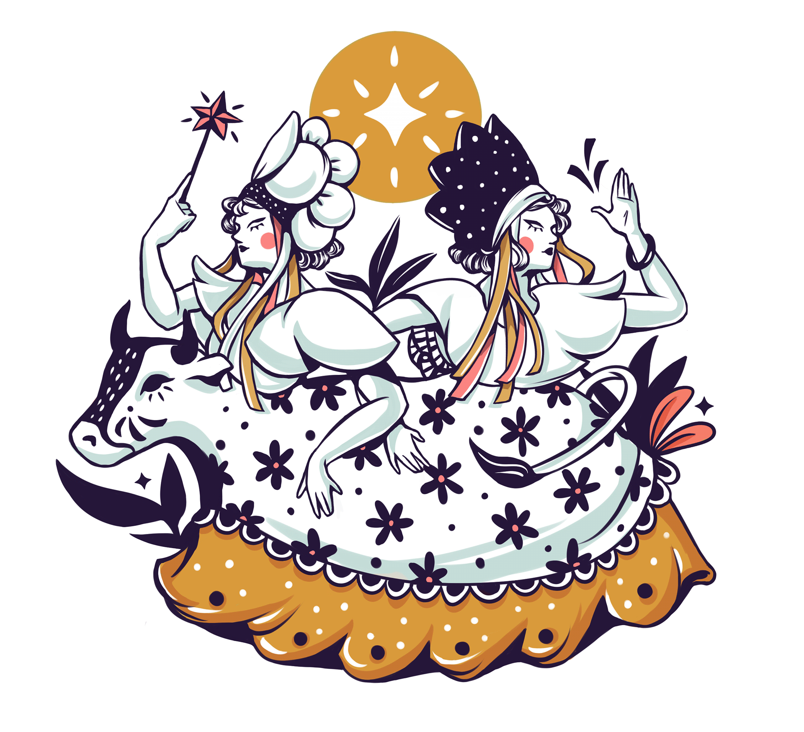
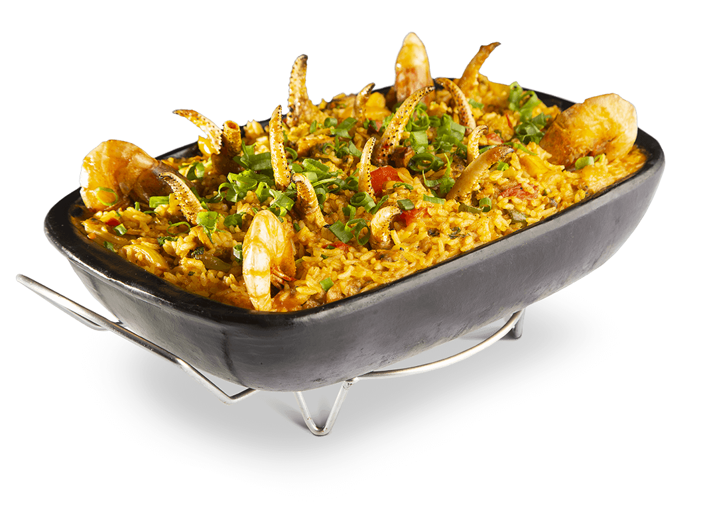
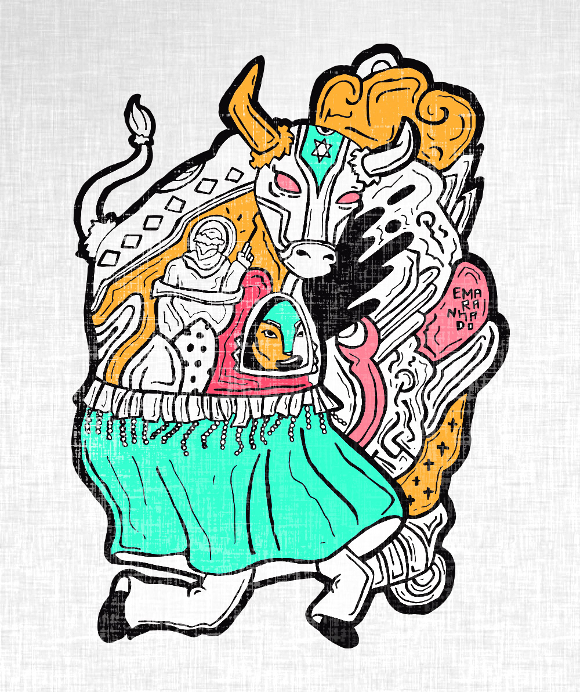

Festas Populares
A terra da capital do reggae é, também, o lar da diversidade e
patrimônio histórico, com uma mistura de ritmos e festas que
encanta.

Comidas Típicas
A culinária maranhense é uma das mais consagradas culinárias
brasileiras, representando bem a região nordestina.

Lendas e Mistérios
Aqui no Maranhão há uma variedade de lendas e mistérios que são
passadas de geração em geração